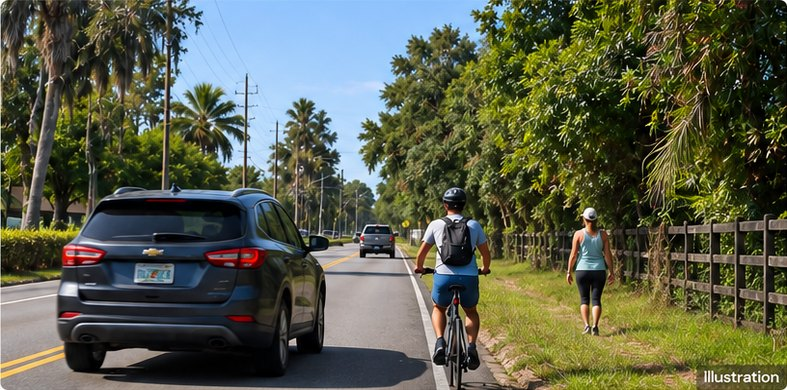
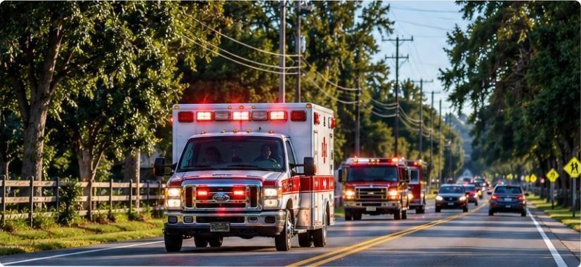
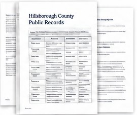
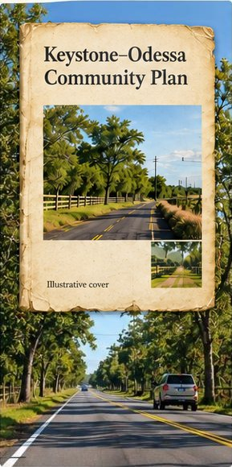
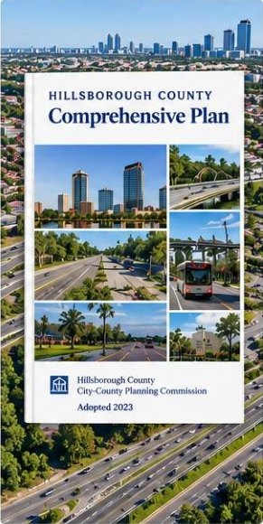

Limited street lighting can make it more difficult and dangerous to travel at night, increasing the risk of crashes and affecting the safety of residents, students, commuters and emergency responders.
It directly impacts the health, safety and welfare of our community.
FHWA explains that modern lighting can precisely target where light is needed while minimizing spill into the night sky and neighboring properties. Rural character should drive better design, not end the safety discussion.
Source: Livable Communities Element. Livable Communities compilation dated June 26, 2026. Effective dates: p. 3. County framework relationship: pp. 4–5. Keystone–Odessa: pp. 17–27. Transportation and lighting: p. 24. Read the Community Plan
Source: Federal Highway Administration Lighting safety countermeasure. FHWA-SA-21-050, Applications and Considerations. Modern lighting control and reduced spill; general engineering guidance. Read FHWA guidance on lighting
02 — Gunn Highway
Expansion of Gunn Highway is restricted.
The Community Plan identifies Gunn Highway as a road with restrictions on further expansion.
The Community Plan identifies Gunn Highway as a road with expansion restrictions; the County’s constrained-road table also references the Community Plan for the section from South Mobley Road to Pasco County.
Limits on expanding Gunn Highway affect traffic, safety and access for residents, commuters, students and emergency services.
19,912 DAILY VEHICLE MOVEMENTS. TWO LANES. The County’s 2024 data put Gunn Highway from the Pasco County line to Van Dyke Road at 19,912 annual-average daily vehicle movements. Both daily and peak-direction service are rated E against a D standard. These figures demand a serious response.
Source: County 2024 level-of-service traffic sections. County 2024 traffic layer. OBJECTID 582: Gunn Highway, Pasco County line to Van Dyke Road, AADT 19,912. OBJECTID 136: Van Dyke Road, Gunn Highway to Suncoast north ramp, AADT 17,500. Both have two lanes, daily and peak-direction LOS E, and standard D. Read the County’s 2024 traffic data
03 — Walking, Biking & Crossings
Pedestrians and cyclists face safety risks.
The safety of pedestrians, cyclists, and people crossing the road needs to be considered together with traffic, speed, crossings, and the actual conditions on each corridor.
The Community Plan includes content about pedestrian/equestrian crossings, traffic controls, trails, and bikeways.

Community Plan rule
Includes pedestrian/equestrian crossings, traffic controls, trails and bikeways.
Limited and unsafe conditions for pedestrians and cyclists increase the risk of crashes and affect the safety of residents, students, commuters and everyone who uses these roads.
Safe walking and biking routes are essential for a safer, healthier and more connected community.
SAFE WALKING SHOULD NOT BE AN EXCEPTION. County Mobility Objective 2.2 calls for protecting pedestrians, children, seniors and people with disabilities. FHWA recommends connected walking routes without gaps. A safe route matters whether you are going to school, visiting a neighbor or using a wheelchair.
The road network serves ambulances, fire services, police, and emergency travel. Access and travel time need to be considered in decisions about road infrastructure.

Community Plan rule
The Community Plan includes content about emergency access as part of transportation and roadway policies.
“The plan includes policies related to emergency access, traffic controls and roadway improvements.”
Reliable emergency access is essential for residents, students, commuters and the entire community. Delays can affect emergency response times and public safety.
Road decisions should support faster, safer emergency access for the community.
The NIMBY Map vs. the Actual Map
The NIMBY Map does not show the full transportation reality.
The NIMBY Map focuses on the Keystone–Odessa Community Plan boundary.
The Actual Map shows the real road network extending beyond that boundary and serving residents, commuters, students, workers, emergency responders, deliveries, and people traveling through the area.
The NIMBY Map
Shows the Community Plan boundary.
It presents Keystone–Odessa mainly as an isolated planning area.
↔
The Actual Map
Shows how the road network actually functions.
Major roads connect Keystone–Odessa with surrounding communities and serve people far beyond the Community Plan boundary.
Road safety and transportation decisions affect more than the people living inside the Community Plan boundary.
Over one-third of the Keystone–Odessa Community Plan area is mapped conservation land, lakes, reservoirs or ponds. GIS measurement, 16 October 2026: 34.3% (8,025 of 23,387 acres); conservation land and mapped lakes/reservoirs/ponds clipped to the adopted Plan boundary, with overlaps counted once. Sources: Plan Hillsborough; FNAI (September 2026); acquired ELAPP; SWFWMD (2023).
05 — Records & Evidence
The numbers demand action
Read the records. Review the policy. Ask the County to put people first.
Safety dataCrash · Severity · Location · Time
Unverified example, not established local evidence
Higher crash frequency along Gunn Highway
Multiple crashes, including serious injuries, have been reported along Gunn Highway.
Public recordsProjects · Studies · Requests · Agency Responses

Study the options.
The County’s Van Dyke study excluded Gunn Highway to west of Suncoast Parkway from capacity-improvement analysis because of Comprehensive Plan constraints.
County Van Dyke study newsletter, June 2025 LRC packet, page 13
DON’T RULE OUT SOLUTIONS BEFORE STUDYING THEM. The County’s Van Dyke study excluded Gunn Highway to west of Suncoast Parkway from capacity-improvement analysis because of Comprehensive Plan constraints. Demand a full evaluation of the options.
Source: County Van Dyke study newsletter in June2025 LRC packet. County study newsletter in the June 2025 LRC agenda packet, PDF page 13. Van Dyke Road capacity-analysis exclusion and project scope. Read the Van Dyke study — page 13
ANOTHER CORRIDOR BELOW ITS STANDARD. The County’s 2024 data list Van Dyke Road from Gunn Highway to the Suncoast north ramp at 17,500 annual-average daily vehicle movements, two lanes and daily and peak-direction LOS E against a D standard.
Source: County 2024 level-of-service traffic sections. County 2024 traffic layer. OBJECTID 582: Gunn Highway, Pasco County line to Van Dyke Road, AADT 19,912. OBJECTID 136: Van Dyke Road, Gunn Highway to Suncoast north ramp, AADT 17,500. Both have two lanes, daily and peak-direction LOS E, and standard D. Read the County’s 2024 traffic data
Don’t rule out solutions before studying them.
Demand a full evaluation. Ask the County to reconsider the constraints.
06 — How do the Community Plan and Comprehensive Plan approach the issue?
Two planning frameworks. Two approaches to roads and safety.
Both plans address roads and safety, but they take different approaches. The Community Plan sets area-specific rules for Keystone–Odessa, while the Comprehensive Plan provides countywide policies.
Keystone–Odessa Community Plan
Focuses on area-specific rules:

Rural road characteristics.
Should a rural appearance come before people’s daily needs? The plan prioritizes two-lane rural roads and limits changes that increase capacity or urbanize the area.
Road configuration.
Why limit the options before assessing what people need? The plan identifies preferred road configurations, including two-lane rural sections, and the types of improvements considered appropriate for the area.
Gunn Highway.
How much traffic is enough to reconsider the restrictions? Gunn Highway is identified as a road with restrictions on further expansion and included in the constrained-road tables.
Lighting.
Does someone have to get hurt first? The plan allows lighting when public safety is at risk. Identify the danger. Act before someone is injured.
Identified types of transportation improvements.
Should a safety improvement have to pass a rural-character test? The plan allows intersection, cycling, walking and traffic-control improvements while requiring rural character to be maintained.
↔
Hillsborough County Comprehensive Plan
Focuses on related countywide policies:
Transportation safety
Includes countywide policies to improve transportation safety, reduce crashes, and address safety for all users, including drivers, pedestrians and cyclists. (Mobility Element)
Mobility
Supports a connected and functional multimodal network, including roadways, transit, bicycle and pedestrian facilities. (Mobility Element)
Infrastructure needs
Addresses transportation infrastructure needs based on current and future conditions, including roadway capacity, intersection improvements and system performance. (Mobility Element)
Evaluation of conditions
Uses data, level-of-service standards and network evaluation to identify needed improvements across the county. (Mobility Element)
Planning tools
Provides broader transportation planning tools, such as the Cost Feasible Plan, the Transportation Improvement Program (TIP) and coordination with the Long Range Transportation Plan (LRTP). (Mobility Element)

A ROAD RESTRICTION IS NOT A PERMANENT ANSWER. County Mobility Policy 5.1.4 calls for the constrained-road list to be reevaluated before each long-range transportation plan update, balancing community preservation, safety and growing traffic congestion. Put Gunn Highway’s restriction back under serious public scrutiny.
Source: County Comprehensive Plan One Water and Mobility. County compilation dated June 26, 2026. One Water 4.3.2–4.3.7: pp. 229–234. Mobility 5.1.2–5.1.4: p. 135. Constrained roads: pp. 250–251. Read the County policy and full criteria
This is a summary comparison. The detailed analysis of each policy, with side-by-side excerpts from both plans, is on the Comparison Page.